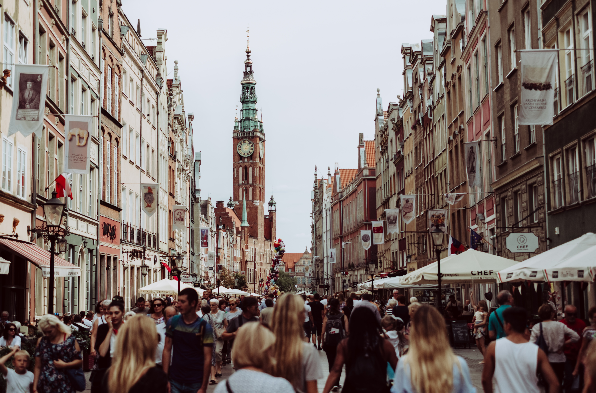
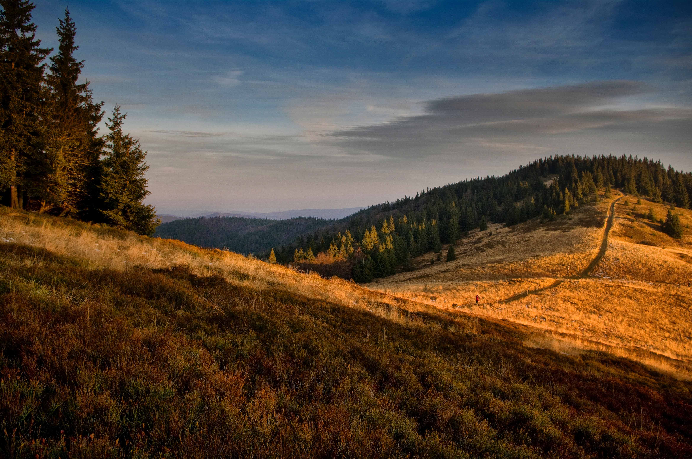
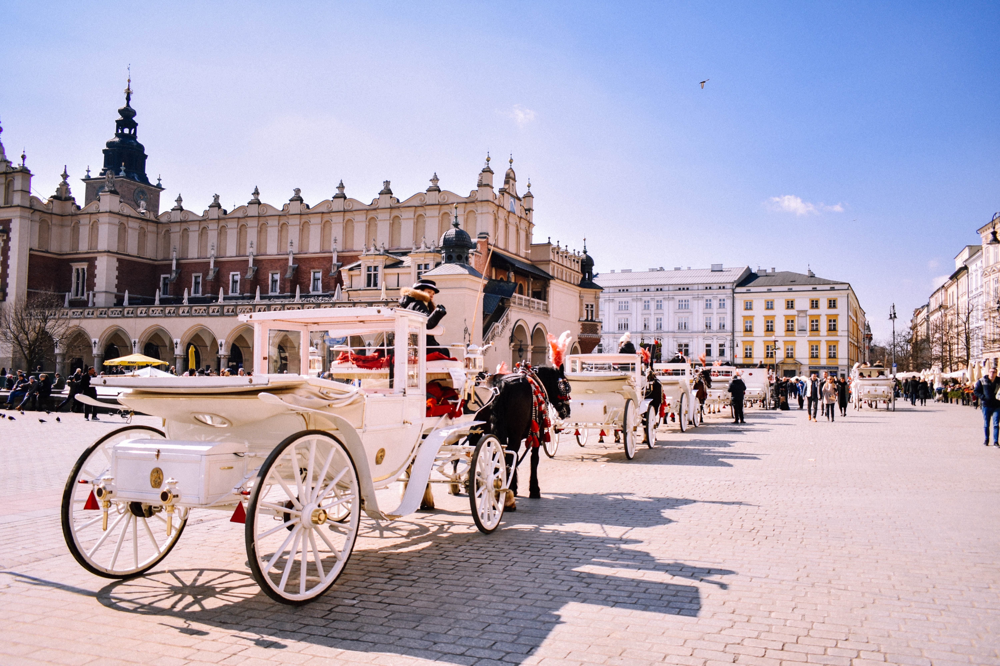

Fast, sustainable and comfortable train travel to the Polish capital Warsaw?
In our latest blog posts we have provided inspiration on how to travel by train to the sunny Italian, Moroccan or Greek cities. But not everyone wants to experience summer, beach and sunshine in the south all the time. Even east of Germany there are many destinations worth seeing, which you can reach surprisingly cheap, comfortable and easy by train. Especially culture and history lovers will get their money's worth here! And the biggest advantage? You reach your destination much faster by train, as the distances are often not as long as from Germany to Greece and Morocco. With this blog post we show how easy it is to explore the Polish capital Warsaw by train.

Warsaw - an interesting city?
Warsaw is a city rich in history. In the 2nd World War Warsaw gained sad prominence because of the Warsaw Ghetto and was almost completely destroyed in the war. One of Warsaw's landmarks, the Palace of Cultures, symbolizes the communist post-war period of Poland as part of the Soviet Union and rises 231 meters into the sky of the city, visible from afar. Due to its often sad history, Warsaw has many museums. A very recommendable museum is the Jewish Museum in Warsaw, which has an outstanding quality. The small old town of Warsaw invites you to stroll around. The good, hearty Polish cuisine is always a good reason to visit Poland. The skyline of Warsaw shows the successful recent development of Poland and Warsaw.
And the best?
As of December 2019 there are up to 5 daily direct train connections from Berlin to the Polish capital. From Berlin you can reach Warsaw in about 5 hours and 30 minutes. The journey in Polish trains is comfortable and much cheaper than in Germany. Tickets are available from about 30€. The good thing is that a seat reservation is already included in the price. This saves you from sitting in the aisle and crowded trains. Furthermore the service in the train is very good. A bottle of mineral water is provided free of charge by the friendly train staff.